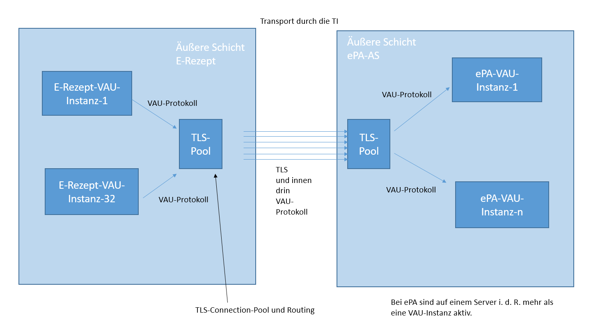

Die Datenübermittlung zwischen TI-Flow-Fachdienst und ePA-Aktensystem erfolgt über HTTPS/TLS gemäß den Vorgaben aus den referenzierten Spezifikationen. Dabei wird das Server-Zertifikat des ePA-Aktensystems geprüft. Zusätzlich wird das VAU-Protokoll verwendet. Für die Authentisierung erstellt der TI-Flow-Fachdienst ein self-signed JWT Bearer-Token, und für Operationsaufrufe wird die clientID für den User-Agent festgelegt.
TLS-Verbindung
Zur Absicherung der Datenübermittlung muss der Transport der Nachrichten zwischen TI-Flow-Fachdienst uns ePA-Aktensystem mittels HTTPS erfolgen. Transport Layer Security (TLS) ist gemäß den Vorgaben aus [gemSpec_Krypt] einzusetzen.
Der ePA-Aktensystem unterstützt an den genutzten Schnittstellen mindestens die HTTP Version 1.1 (siehe A_24654 - ePA: http-Version).
Der ePA-Aktensystem nutzt sein C.FD.TLS-S Zertifikat für den TLS-Verbindungsaufbau. Der TI-Flow-Fachdienst prüft beim Verbindungsaufbau das Server-Zertifikat des ePA-Aktensystems entsprechend der Vorgaben von [gemSpec_PKI].
funkt. Eignung: Test Produkt/FA
Der TI-Flow-Fachdienst MUSS das Zertifikat des ePA-Aktensystems gemäß den Vorgaben von [gemSpec_PKI] und des TUC_PKI_018 mit den Eingangsdaten gemäß der Tabelle Tab_eRPFD_018 prüfen und im Fehlerfall den Aufbau der HTTPS-Verbindung abbrechen. Tabelle #: Tab_eRPFD_018 - Eingangsdaten für die Prüfung des ePA-Aktensystem Server-Zertifikats
TUC_PKI_018 Eingangsdaten
Zulässiger Wert bzw. Beschreibung
TSL
die entsprechende TSL für Infrastrukturkomponenten
Zertifikat
das zu prüfende Zertifikat vom Kommunikationspartner
Referenzzeitpunkt
aktuelle Systemzeit
Prüfmodus
OCSP
PolicyList
oid_fd_tls_s
Vorgesehene KeyUsage
digitalSignature
Vorgesehene ExtendedKeyUsage
id-kp-serverAuth
GracePeriod
der Wert muss konfigurierbar sein
Offline-Modus
nein
Timeout
Default-Wert (siehe [gemSpec_PKI])
TOLERATE_OCSP_FAILURE
Default-Wert (siehe [gemSpec_PKI])
Tabelle: Eingangsdaten für die Prüfung des ePA-Aktensystem Server-Zertifikats
Der TUC gibt neben dem Status der Zertifikatsprüfung auch die im Zertifikat enthaltene Rolle (Admission) zurück. Diese muss geprüft werden.
funkt. Eignung: Test Produkt/FA
Der TI-Flow-Fachdienst MUSS prüfen, dass die im Zertifikat enthaltene Rolle (Admission) gleich oid_epa_dvw ist und im Fehlerfall den Aufbau der HTTPS-Verbindung abbrechen.
VAU-Protokoll
Zusätzlich zu der Transportverschlüsselung mittels TLS werden die zu übermittelten Daten mit dem VAU-Protokoll gesichert. Es gelten die Vorgaben aus [gemSpec_Krypt#7 VAU-Protokoll für ePA für alle].

Abbildung: Transport durch die TI
Für die Authentisierung erstellt der TI-Flow-Fachdienst einen self-signed Bearer-Token. Für die Signatur wird das AUT-Zertifikat der E-Rezept-VAU verwendet. Siehe [gemSpec_Krypt]#7.4 Authentisierung des E-Rezept-FD als ePA-Client und [gemSpec_Aktensystem_ePAfueralle]#3.16.3 Anforderungen an den Authorization Service für die Authentisierung des TI-Flow-Fachdienstes.
Sich.techn. Eignung: Produktgutachten
Der TI-Flow-Fachdienst MUSS für die Authentisierung gegenüber dem ePA-Aktensystem ein JWT Baerer-Token gemäß A_25165-* erstellen.
Sich.techn. Eignung: Produktgutachten
Der TI-Flow-Fachdienst MUSS für die Authentisierung gegenüber dem ePA-Aktensystem das C.FD.AUT Zertifikat mit professionOID oid_erp-vau und der der Telematik-ID 9-TI-Flow-Fachdienst verwenden.
funkt. Eignung: Test Produkt/FA
Der TI-Flow-Fachdienst MUSS bei allen Operationsaufrufen am Information Service, Authorization Service oder Medication Service die clientID "ERP-FD" verwenden, um den zu übermittelnden UserAgent zu erzeugen.
ePA-Aktensysteme ermitteln
funkt. Eignung: Herstellererklärung
Der TI-Flow-Fachdienst MUSS zur Lokalisierung der ePA-Aktensysteme die durch die im DNS für die übergreifende ePA-Domäne epa4all.de eingestellten Informationen aufrufen.
Für die Bezeichnung der Ressourcen Records siehe "A_24592-* Anbieter ePA-Aktensystem - Registrierung an übergreifender ePA-Domäne". Die Informationen zu jedem ePA-Aktensystem enthalten den Endpunkt für den Authorization Service [I_Authorization_Service], Medication Service [I_Medication_Service] und Information Service [I_Information_Service].
funkt. Eignung: Herstellererklärung
Der TI-Flow-Fachdienst DARF NICHT Lokalisierungsinformationen zu ePA-Aktensystemen verwenden, welche länger als 24h lokal durch den TI-Flow-Fachdienst gecacht wurden.
ePA-Aktensystem für KVNR ermitteln
funkt. Eignung: Herstellererklärung
Der TI-Flow-Fachdienst MUSS für das Ermitteln des ePA-Aktensystem bei dem das Aktenkonto zu einer KVNR verwaltet wird, einmal den Endpunkt .../ehr/{insurantid}/consentdecisions des [I_Information_Service] jedes ePA-Aktensystem aufrufen und das Ermitteln abbrechen, wenn die Response den Statuscode 404 erhält.
funkt. Eignung: Herstellererklärung
Der TI-Flow-Fachdienst DARF NICHT Informationen zur Zuordnung von KVNR und ePA-Aktensystem verwenden, welche länger als 180 Tage gecacht wurden.
funkt. Eignung: Herstellererklärung
Der TI-Flow-Fachdienst MUSS gecachte Informationen zur Zuordnung von KVNR und ePA-Aktensystem invalidieren, wenn bei der Übermittlung die Response den Statuscode 404 erhält.
funkt. Eignung: Herstellererklärung
Der TI-Flow-Fachdienst MUSS die Aufrufe zum Ermitteln des ePA-Aktensystem für mindestens eine Minute unterbrechen, wenn ein Operationsaufruf im Information Service mit einem Statuscode 500 scheitert, und anschließend für weitere Aufrufe einen exponentiellen Backoff-Mechanismus anwenden, der die Wartezeit zwischen den Versuchen sukzessive verdoppelt, um die Belastung des Zielsystems zu minimieren.
funkt. Eignung: Herstellererklärung
Der TI-Flow-Fachdienst MUSS den Aufruf zum Ermitteln des ePA-Aktensystem als fehlerhaft kennzeichnen und eine detaillierte Fehlermeldung für interne Analysezwecke protokollieren, wenn der Information Service der ePA auf einen Operationsaufruf mit einem Statuscode 400 (malformed Request) reagiert.
Übermittlung an den Medication Service
funkt. Eignung: Test Produkt/FA
Der TI-Flow-Fachdienst MUSS sicherstellen, dass ausschließlich Daten zu Tasks mit dem Flowtype 160, 166, 169, 200 oder 209 für den ePA Medication Service bereitstellt werden.
funkt. Eignung: Test Produkt/FA
Der TI-Flow-Fachdienst MUSS das Übermitteln der Daten an den ePA Medication Service asynchron zur Bereitstellung der Daten durch die Clientsysteme umsetzen, damit für das bereitstellende Primärsystem der verordnenden oder abgebenden Leistungserbringerinstitution oder E-Rezept-FdV keine verlängerte Verarbeitungsdauer der auslösenden Operation auftritt.
Mappingregeln
funkt. Eignung: Test Produkt/FA
Der TI-Flow-Fachdienst MUSS beim Bereitstellen der Daten für ePA Medication Service die durch Clientsysteme des TI-Flow-Fachdienst bereitgestellten Ressourcen (E-Rezept FHIR Ressource) in Ressourcen des ePA Medication Service (ePA Medication Service FHIR Ressourcen) gemäß der Tabelle Tab_eRPFD_019 unter Beachtung der Ausnahmeregelungen überführen.
Ausgangsprofil der E-Rezept FHIR Ressourcen
Zielprofil der ePA Medication Service FHIR Ressourcen
MedicationRequest resource for the ePA Medication Service
https://gematik.de/fhir/epa-medication/StructureDefinition/epa-medication-request
Setzen des Pattern "filler-order" für .inten
Keine Übernahme von "insurance"-Elemente
Keine Übernahme von "requester.reference"-Elemente
Keine Übernahme von "subject.reference"-Elemente
Keine Übernahme von "extension:Notdienstgebuehr"-Elemente
Keine Übernahme von "extension:Zuzahlungsstatus"-Elemente
Keine Übernahme von "dosageInstruction.extension:Dosierungskennzeichen"-Elemente
Keine Übernahme von "MedicationRequest.extension:Unfallinformationen"-Elementen
Medication resource for the ePA Medication Service
https://gematik.de/fhir/epa-medication/StructureDefinition/epa-medication
Tabelle: Übersicht Mapping und Ausnahmeregelungen des Mappings
funkt. Eignung: Test Produkt/FA
Der TI-Flow-Fachdienst MUSS beim Bereitstellen der MedicationDispense für den ePA Medication Service eine Ressource des Profils https://gematik.de/fhir/directory/StructureDefinition/OrganizationDirectory erstellen und Organization.identifier:TelematikID mit zeta-user-info.identifier sowie Organization.name mit zeta-user-info.commonName aus den Nutzerinformationen belegen.
funkt. Eignung: Test Produkt/FA
Der TI-Flow-Fachdienst MUSS beim Bereitstellen der Daten für den ePA Medication Service sicherstellen, dass Datenwerte der E-Rezept FHIR Ressource übernommen werden, sofern das entsprechende Element in dem Ausgangs- und Zielprofilen vorhanden ist.
funkt. Eignung: Test Produkt/FA
Der TI-Flow-Fachdienst MUSS beim Bereitstellen der Daten für den ePA Medication Service sicherstellen, dass alle Extensions aus den E-Rezept FHIR-Ressourcen in die ePA Medication Service FHIR-Ressource übernommen werden, es sei denn, eine Ausnahmeregelung ist in der Tab_eRPFD_019 festgelegt.
Hinweis: Falls in GEM_ERP_PR_MedicationDispense eine Extension MedicationDispense.medication[x].extension:dataAbsentReason vorhanden ist, wird diese in die EPA MedicationDispense übernommen. Der TI-Flow-Fachdienst loggt die Verwendung dieser Extension in den Betriebsdaten.
Lokalisierung
Der TI-Flow-Fachdienst benötigt für das Übermitteln von Informationen zu Verordnungsdaten und Dispensierinformationen die Information, bei welchen ePA-Aktensystem das Aktenkonto des Versicherten verwaltet wird. Siehe Kapitel 6.10.3 ePA-Aktensystem für KVNR ermitteln.
Abbildung: Nichtauffinden des Aktenkontos in allen ePA-Aktensystemenfunkt. Eignung: Test Produkt/FA
Der TI-Flow-Fachdienst MUSS alle Übermittlungsaufträge für eine KVNR abbrechen, wenn bei dem Versuch, ein Aktenkonto für diese KVNR zu finden, die Information Services aller ePA-Aktensysteme eine Response mit dem Statuscode 404 zurückgeben.
Widerspruchsprüfung
Vor jedem Übermitteln prüft der TI-Flow-Fachdienst, ob der Versicherte in das Einstellen von Verordnungsdaten und Dispensierinformationen durch den TI-Flow-Fachdienst eingewilligt hat.
funkt. Eignung: Test Produkt/FA
Der TI-Flow-Fachdienst MUSS vor jedem Übermitteln von Informationen zu Verordnungsdaten oder Dispensierinformationen an den ePA Medication Service den Endpunkt /information/api/v1/ehr/consentdecisions des Information Service aufrufen, prüfen, ob für die Funktion "erp-submission" der Wert "permit" vorliegt und die Übermittlung final abbrechen, wenn die Prüfung fehlschlägt.
Verschlüsseln
Der TI-Flow-Fachdienst muss den Inhalt jedes Operationsaufrufes am Medication Service gemäß [gemSpec_Krypt]#A_24628-* VAU-Protokoll: VAU-Client: Request erzeugen/verschlüsseln verschlüsseln.
Übermitteln
Für die Kommunikation mit dem Medication Service wurde [gemIG_ePA_Medication] definiert. Dieser FHIR-IG enthält Spezifikationen für Schnittstellen und Datenmodelle des ePA Medication Service.
funkt. Eignung: Herstellererklärung
Der TI-Flow-Fachdienst MUSS bei der Übermittlung von Daten an den Medication Service die Schnittstellen nach [gemIG_ePA_Medication] verwenden.
funkt. Eignung: Test Produkt/FA
Der TI-Flow-Fachdienst MUSS zur Bereitstellung von Verordnungsdaten an den ePA Medication Service die Operation [base]/$provide-prescription-erp des Medication Service aufrufen.
funkt. Eignung: Test Produkt/FA
Der TI-Flow-Fachdienst MUSS, um die Löschinformation für Verordnungsdaten an den ePA Medication Service zu übermitteln, die Operation [base]/$cancel-prescription-erp des Medication Service aufrufen.
funkt. Eignung: Test Produkt/FA
Der TI-Flow-Fachdienst MUSS zur Bereitstellung von Dispensierinformationen an den ePA Medication Service die Operation [base]/$provide-dispensation-erp des Medication Service mit rxDispensation.status gemäß dem bereitgestellten Status aufrufen.
funkt. Eignung: Test Produkt/FA
Der TI-Flow-Fachdienst MUSS, um die Löschinformation für Dispensierinformationen an den ePA Medication Service zu übermitteln, die Operation [base]/$cancel-dispensation-erp des Medication Service aufrufen.
funkt. Eignung: Herstellererklärung
Der TI-Flow-Fachdienst KANN für die Übermittlung von Verordnungsdaten und Dispensierinformationen an den ePA Medication Service mehrere Instanzen von MedicationRequest oder mehrere Instanzen von MedicationDispense einer KVNR in einem einzigen Operationsaufruf bündeln.
Entschlüsseln
Der TI-Flow-Fachdienst muss den Response eines Operationsaufrufes am Medication Service gemäß der [gemSpec_Krypt]#A_24633-* VAU-Protokoll: VAU-Client: Response entschlüsseln/auswerten entschlüsseln.
Aktenumzug
Wenn ein Versicherter die Krankenkasse wechselt, dann wird sein Aktenkonto umgezogen. Für den Zeitraum des Umzuges ist das Aktenkonto für das Einstellen neuer Daten gesperrt. Der Information Service und der Medication Service antworten mit dem Http-Errorcode 409. Der TI-Flow-Fachdienst wiederholt die Übermittlung zu einem späteren Zeitpunkt.
Es wird unterschieden zwischen den Szenarien, dass ein Aktenkonto innerhalb eines ePA-Aktensystems oder zwischen zwei ePA-Aktensystemen umziehen kann.
Abbildung: Aktenkonto Umzug innerhalb eines ePA-Aktensystems
Abbildung: Aktenkonto Umzug zu einem anderen ePA-Aktensystemfunkt. Eignung: Herstellererklärung
Der TI-Flow-Fachdienst MUSS alle Übermittlungsaufträge für eine KVNR für 24 Stunden pausieren, wenn das Aktenkonto aufgrund eines Umzugs nicht erreichbar ist und der Medication Service oder der Information Service eine Response mit dem Statuscode 409 zurückgibt, und nach dieser Pause einen erneuten Übermittlungsversuch starten.
Fehlerbehandlung
Abbildung: ePA-Aktensystem nicht verfügbarfunkt. Eignung: Herstellererklärung
Der TI-Flow-Fachdienst MUSS die Datenübermittlung an ein Aktenkonto für mindestens eine Minute unterbrechen, wenn ein Aufruf im Medication Service mit dem Statuscode 500 scheitert, anschließend den Endpunkt zum Auffinden des Aktenkonto für diese KVNR bei allen weiteren Information Services abrufen, die Anfrage am gefundenen Medication Service wiederholen und bei anhaltenden Problemen einen exponentiellen Backoff-Mechanismus anwenden, der die Wartezeit zwischen den Versuchen sukzessive verdoppelt, um die Systembelastung zu minimieren.
funkt. Eignung: Test Produkt/FA
Der TI-Flow-Fachdienst MUSS bei einem Statuscode 400 in der Response des Medication Service, der auf operationelle Probleme wie Entschlüsselungsprobleme hindeutet, den Übermittlungsversuch abbrechen, einen neuen VAU-Kanal aufbauen und anschließend einen neuen Übermittlungsversuch starten.
funkt. Eignung: Test Produkt/FA
Der TI-Flow-Fachdienst MUSS, wenn er eine verschlüsselte Antwort des Medication Service nicht entschlüsseln kann und Unklarheit über den Erfolg der Übermittlung besteht, den Übermittlungsversuch abbrechen, einen neuen VAU-Kanal aufbauen und einen neuen Übermittlungsversuch starten.
funkt. Eignung: Test Produkt/FA
Der TI-Flow-Fachdienst MUSS den Übermittlungsversuch abbrechen, wenn kein VAU-Kanal zum Medication Service aufgebaut werden kann, weil dieser nicht verfügbar ist, und nach Wiederverfügbarkeit einen neuen Übermittlungsversuch starten.